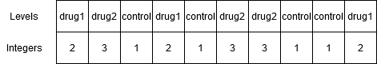

Aineisto ei tyypillisesti ole valmiiksi oikeassa muodossa. Voi olla, että halutaan esimerkiksi käyttää vain jotain osajoukkoa aineistosta tai muodostaa uusia muuttujia analyysia varten. Tällöin tarvitaan komentoja aineiston muokkaamiseksi.
Yleinen käytännön vinkki: Aineiston muokkaaminen (data wrangling) on isojen tutkimusaineistojen kohdalla todella työlästä. Tällöin saatetaan joutua yhdistelemään aineistoja useista lähteistä, etsimään virheellisiä arvoja, muokkaamaan tekstimuotoisia (character) muuttujia eri muotoon ym. Mikäli halutaan muokata tekstimuotoisia vektoreita eri muotoon, niin ne kannattaa muuttaa faktoriksi vasta lopuksi, sillä muuttujan ei ole yleensä tarpeellista olla faktorimuodossa aineistoja muokatessa. Faktorit ovat tyypillisesti tarpeen vasta kun aineistoa aletaan todella analysoimaan.
5.1 Uuden muuttujan tai rivin luonti datakehikkoon
Uusi muuttuja voidaan luoda R:ssä joko perustuen aineiston muihin muuttujiin, tai muuttujan arvot voidaan syöttää vektorina aineistoon. Mikäli uusi muuttuja syötetään lukuina R-koodiin, tulee varmistua siitä, että havaintoja on sama määrä kuin aineistossa on rivejä. Muutoin aineisto tulee syötettyä virheellisesti ja tulokset eivät pidä paikkaansa.
Uuden sarakkeen luonti tapahtuu samalla tavalla kuin jo olemassa olevan sarakkeen muokkaaminen eli dollarisymbolilla, jossa dollarin jälkeen annetaan ensin uuden sarakkeen nimi ja tähän sijoitetaan halutut uuden muuttujan arvot.
study_data <-read.table("data/study_data.txt")# evaluate the number of rows and columnsdim(study_data)
[1] 8 3
# there are 8 rows# initiate a new variable called weight (imput data) with correct number of rowsstudy_data$weight <-c(78.2, 65.8, 49.2, 71.2, 58.3, 54.1, 74.2, 62.8)# calculate a new variable based on existing variablesstudy_data$height_m <- study_data$height /100# height as metresstudy_data$BMI <- study_data$weight / (study_data$height_m^2)study_data
Datakehikosta voidaan poimia sarakkeita joko niiden nimien tai niitä vastaavien indeksien perusteella, kuten matriisin tapauksessa. Yksittäisiä sarakkeita voidaan poimia ja muokata myös dollarisymbolin $ kautta.
# Subscripting with variable namesstudy_data[, c("height", "gender")]
height gender
1 189.8 male
2 184.0 female
3 173.8 male
4 175.9 male
5 169.0 female
6 183.7 male
7 181.8 male
8 16.9 female
# Subscripting with brackets - as matrix (but I do not recommend this style!)study_data[, 1:2]
# Individual columns can be accessed and added with dollar sign# Let's say that we find out that the ID number 8 was typed in incorrectly. We can fix the entire height variables as followsstudy_data$height <-c(189.8, 184.0, 173.8, 175.9, 169.0, 183.7, NA, 160.9)study_data
ID height gender weight height_m BMI
1 1 189.8 male 78.2 1.898 21.70773
2 2 184.0 female 65.8 1.840 19.43526
3 3 173.8 male 49.2 1.738 16.28792
4 4 175.9 male 71.2 1.759 23.01168
5 5 169.0 female 58.3 1.690 20.41245
6 6 183.7 male 54.1 1.837 16.03168
7 7 NA male 74.2 1.818 22.44999
8 8 160.9 female 62.8 0.169 2198.80256
# It would have been possible to change value of only one cell e.g. like thisstudy_data$height[8] <-161.9study_data
ID height gender weight height_m BMI
1 1 189.8 male 78.2 1.898 21.70773
2 2 184.0 female 65.8 1.840 19.43526
3 3 173.8 male 49.2 1.738 16.28792
4 4 175.9 male 71.2 1.759 23.01168
5 5 169.0 female 58.3 1.690 20.41245
6 6 183.7 male 54.1 1.837 16.03168
7 7 NA male 74.2 1.818 22.44999
8 8 161.9 female 62.8 0.169 2198.80256
Uuden rivin lisäys datakehikkoon on hieman monimutkaisempaa kuin uuden rivin lisääminen matriisiin, sillä ensin pitää tehdä uusi datakehikko, jolla on samat sarakkeet kuin alkuperäisellä (samassa järjestyksessä), ja vasta sitten liittää se komennolla rbind. Käyttäjän tulee myös huolehtia siitä, että sarakkeet ovat samaa tyyppiä kuin alkuperäisessä datakehikossa.
ID height gender weight height_m BMI
1 1 189.8 male 78.2 1.898 21.70773
2 2 184.0 female 65.8 1.840 19.43526
3 3 173.8 male 49.2 1.738 16.28792
4 4 175.9 male 71.2 1.759 23.01168
5 5 169.0 female 58.3 1.690 20.41245
6 6 183.7 male 54.1 1.837 16.03168
7 7 NA male 74.2 1.818 22.44999
8 8 161.9 female 62.8 0.169 2198.80256
11 11 182.0 male 81.2 1.820 24.51395
5.3 Osajoukon valinta
Aineistosta voi poimia osajoukon hakasulkujen avulla indeksoimalla. Osajoukon poimintaan tarvitaan usein vertailuoperattoreita, ja jos kriteerejä on useita, niin tarvitaan myös useita loogisia operaattoreita. Tarkemmin operaattoreita käsitellään luvussa Loogiset operaattorit. Voit käyttää kyseisen osion taulukkoa apuna jo tässä osiossa. Osajoukkoja voidaan poimia myös suoraan antamalla halutut indeksit esimerkiksi indeksivektorin avulla.
# Filter only femalesstudy_data[study_data$gender =="female", ]
# Filter individuals whose height is less than or equal to 175study_data[study_data$height <=175, ]
ID height gender weight height_m BMI
3 3 173.8 male 49.2 1.738 16.28792
5 5 169.0 female 58.3 1.690 20.41245
NA NA NA <NA> NA NA NA
8 8 161.9 female 62.8 0.169 2198.80256
# Filter individuals whose height is not missing and is less than or equal to 175study_data[!is.na(study_data$height) & study_data$height <=175, ]
# Select individuals (rows) 1,3, and 7 directly with a vector of indicesind <-c(1, 3, 7)study_data[ind,]
ID height gender weight height_m BMI
1 1 189.8 male 78.2 1.898 21.70773
3 3 173.8 male 49.2 1.738 16.28792
7 7 NA male 74.2 1.818 22.44999
5.4 Datakehikon ja vektorin järjestäminen
Yhden vektorin arvot voidaan asettaa nousevaan tai laskevaan järjestykseen funktiolla sort. Funktiota voidaan soveltaa niin numeerisiin kuin merkkitietoa sisältäviin vektoreihinkin. Oletusarvoisesti järjestys on nouseva, eli numeeriset arvot järjestetään pienimmästä suurimpaan ja merkkitieto aakkosjärjestykseen. Järjestyksen voi kääntää laskevaksi argumentilla decreasing = TRUE. Huomaa, että ääkkösten tapauksessa sort ei välttämättä aina järjestä alkioita oikein merkistöstä riippuen.
Jossain tilanteissa on haluttavaa järjestää datakehikon rivit jonkin muuttujan tai muuttujien suhteen. Tähän tarkoitukseen voi käyttää funktiota order, joka palauttaa yhden tai useamman argumentin alkioiden järjestysluvut (rank). Seuraavassa esimerkissä aineiston rivit järjestetään koehenkilöiden pituuden suhteen nouseevaan suuruusjärjestykseen.
study_data[order(study_data$height),]
ID height gender weight height_m BMI
8 8 161.9 female 62.8 0.169 2198.80256
5 5 169.0 female 58.3 1.690 20.41245
3 3 173.8 male 49.2 1.738 16.28792
4 4 175.9 male 71.2 1.759 23.01168
6 6 183.7 male 54.1 1.837 16.03168
2 2 184.0 female 65.8 1.840 19.43526
1 1 189.8 male 78.2 1.898 21.70773
7 7 NA male 74.2 1.818 22.44999
Järjestäminen voidaan tehdä usean muuttujan suhteen, esimerkiksi pituuden ja painon. Tämä tarkoittaa nousevassa järjestyksessä sitä, että jos kahdella koehenkilöllä on täsmälleen sama pituus, valitaan heidän keskinäinen järjestyksensä painon perusteella. Huomaa sort- ja order-funktioiden ero: sort palauttaa suoraan järjestetyn vektorin kun taas order alkioiden järjestysluvut.
5.5 Faktorit
R:n numeeriset vektorit ovat lähtökohtaisesti välimatka- tai suhdeasteikollisia. Olet ehkä ihmetellytkin, miten luokitteluasteikollinen (kategorinen) tai järjestysasteikollinen muuttuja määritellään. Kategorista muuttujaa sanotaan R:ssä faktoriksi. Numeerisen tai tekstimuotoisen muuttujan tai vektorin voi muuttaa faktori-muotoiseksi muuttujaksi factor -funktiolla.
# Let's change gender from character string to a factor and rename it as fgenderstudy_data$fgender <-factor(study_data$gender)# Let's now compare the printing of gender and fgenderstudy_data$gender
[1] male female male male female male male female
Levels: female male
Huomaa, että faktori tulostaa faktorin tasot eli kaikkien mahdollisten luokkien nimet faktorin perässä: Levels: female male.
Usein vastaan tulee myös tilanne, jossa faktorin eri tasoja vastaavat kokonaislukuarvot, kuten tässä esimerkissä luvut 1, 2 ja 3. Tällaisessa tilanteessa faktorin tasojen merkitys on usein annettu jossain dokumenttitiedostossa. Tällöin faktorin tasot ja niiden kuvaukset (labels) tulee määrittää käsin.
# Create a data for this examplewall_dat <-data.frame(building_ID =c(1, 2, 3, 4, 5, 6), building_material =c(1, 1, 2, 2, 3, 3))# Name is 'building_material' very long, I want to rename itnames(wall_dat) <-c("building_ID", "build_mat")# We know from some kind of documentation that 1 stands for "wood", 2 is "steel" and 3 is "brick".wall_dat$fbuild_mat <-factor( wall_dat$build_mat,levels =c(1, 2, 3), labels =c("wood", "steel", "brick"))str(wall_dat)
Faktorimuuttujan kuvaukset siis kertovat, mitä varsinaiset tasoarvot tarkoittavat.
5.6 Extra: Lääketutkimusesimerkki
R:ssä on aiemmin nähtyjen numeric-, character- ja logical-tyyppien lisäksi muitakin vektoriluokkia, joista tärkein on factor eli faktori. Faktoreihin tallennetaan kategorisia muuttujia, kuten tutkimuksessa määrättyjä ryhmiä, aikapisteitä tms. Luodaan esimerkiksi faktori, jossa on kuvitteellisen lääketutkimuksen osallistujien ryhmätiedot:
[1] drug1 drug2 control drug1 control drug2 drug2 control control
[10] drug1
Levels: control drug1 drug2
Factoreita voi luoda muista vektoreista funktioilla factor tai as.factor. as.factor muuntaa vektorin automaattisesti ja nopeasti factoriksi, ja säilyttää myös jo valmiiksi faktoriluokan vektorien tasojen järjestyksen (tästä lisää pian).
Kuten tulosteesta nähdään, faktorin tulostus tulostaa faktorin alkiot (HUOM: ei lainausmerkkejä) sekä faktorin tasot. Faktorit ovat pinnan alla kokonaisluku- eli integer-vektoreita, joissa on päällä “kerros”, joka määrittää factorin tasot. Edellä nähty vektori groups näyttää siis tältä:

Faktorien tasoille annetaan siis lukuarvot ykkösestä eteenpäin. Oletuksena ensimmäinen taso eli taso 1 on aakkosissa ensimmäinen arvo, tai pienin lukuarvo jos faktori tehdään numeerisista muuttujista. Lukuarvot saa näkyville muuntamalla factorin numeeriseksi vektoriksi:
as.numeric(groups)
[1] 2 3 1 2 1 3 3 1 1 2
Tasojen järjestyksen voi myös päättää itse. Tämä on tärkeää, sillä kuten pian nähdään, faktorin ensimmäinen taso on monissa tilastollisissa testeissä ns. referenssitaso, johon muita tasoja verrataan. Usein esiintyvä tapaus ovat tutkimukset, joissa ovat ryhmät nimeltä case ja control. Koska case on aakkosissa ennen controllia, R käyttää oletuksen case-ryhmää referenssitasona, ja testaa miten control-ryhmä poikkeaa tästä tasosta, vaikka haluaisimme päinvastaisen määrittelyn. Tasot voi itse määrittää näin:
[1] case control control case case
Levels: control case
Nyt tasot ovat oikeassa järjestyksessä!
Kuten aiemmin mainittiin, faktoreita voi tehdä myös numeerisista vektoreista. HUOM: muista, että as.numeric() palauttaa faktorin kokonaislukuarvot, ei alkuperäisiä lukuja. Alkuperäiset luvut saa käyttämällä ensin as.character-funktiota, joka muuttaa faktorin tasot merkkijonovektoriksi.